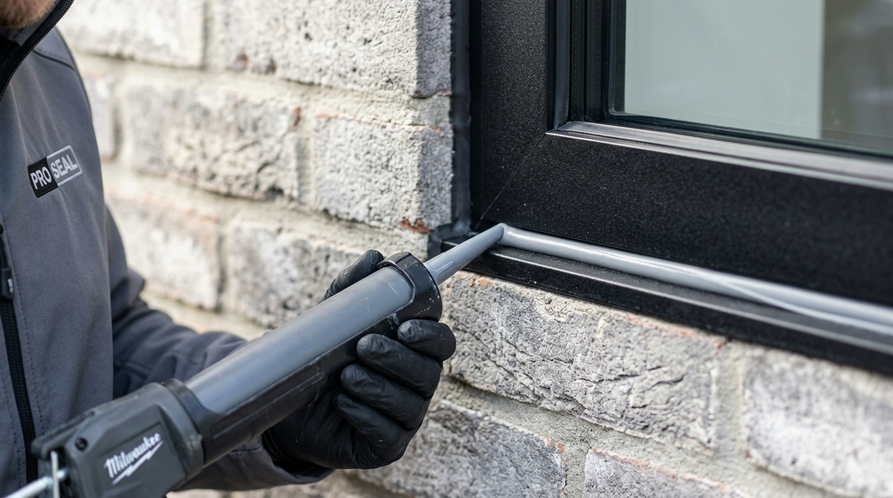

Cara Mengatasi Kusen Aluminium Bocor Saat Hujan Deras Berangin di Karangploso

📌 Ringkasan Inti
Kusen aluminium bocor saat hujan deras di Karangploso umumnya disebabkan celah sealant yang getas, dan dapat diatasi dengan mengganti silikon sealant secara bertahap dan tepat.
- Kebocoran kusen aluminium paling sering muncul di sela pertemuan kusen dengan tembok, bukan pada material aluminiumnya sendiri.
- Angin kencang saat hujan deras mendorong air masuk lewat celah kecil yang sebelumnya tidak terlihat bermasalah.
- Silikon sealant jenis netral lebih disarankan untuk aluminium dibanding sealant asam yang bisa memicu korosi.
- Perbaikan mandiri bisa dilakukan bertahap dari langkah 1 sampai 5 sebelum memutuskan memanggil jasa profesional.
- Kebocoran yang berulang meski sudah disealant ulang biasanya menandakan masalah pada kemiringan kusen atau pemasangan awal.
- 1. Apa Penyebab Kusen Aluminium Bocor Saat Hujan Deras dan Berangin?
- 2. Bagaimana Langkah Menambal Kebocoran Kusen Aluminium dengan Sealant?
- 3. Kapan Kebocoran Kusen Perlu Ditangani oleh Jasa Profesional?
- 4. Tips Memilih Jenis Sealant Silikon Netral Berkualitas
- 5. Perawatan Berkala Kusen Aluminium Menjelang Musim Hujan
Kawasan Karangploso yang berbatasan langsung dengan lereng perbukitan dan jalur Kota Batu kerap mengalami cuaca ekstrem, di mana hujan lebat datang bersamaan dengan tiupan angin kencang. Jika kusen jendela atau pintu aluminium Anda mulai merembeskan air, kenali penyebabnya dan ikuti langkah penanganan praktis berikut.
1. Apa Penyebab Kusen Aluminium Bocor Saat Hujan Deras dan Berangin?
Penyebab utama kebocoran kusen aluminium adalah celah kecil di sambungan antara kusen dan tembok yang sudah tidak lagi rapat akibat sealant lama yang mengeras dan retak. Saat hujan turun disertai angin kencang, tekanan udara mendorong air hujan masuk melalui celah tersebut meski ukurannya sangat kecil.
Kawasan Karangploso berada di dataran yang relatif tinggi dengan pola hujan yang kerap disertai angin, terutama pada musim penghujan. Berdasarkan pola iklim yang dipantau BMKG, periode puncak musim hujan di wilayah Malang Raya, termasuk Karangploso, umumnya berlangsung antara akhir tahun hingga awal tahun, dengan intensitas hujan yang lebih tinggi dibanding bulan-bulan kering. Kondisi ini membuat kusen yang sudah mulai getas sealant-nya lebih rentan bocor dibanding saat musim kemarau.
Selain celah sealant, kebocoran juga bisa dipicu oleh kemiringan pemasangan kusen yang kurang presisi sejak awal, atau tersumbatnya lubang pembuangan air (weep holes) pada frame jendela casement atau sliding, sehingga air justru meluap ke dalam ruangan alih-alih mengalir keluar ke fasad bangunan.

2. Bagaimana Langkah Menambal Kebocoran Kusen Aluminium dengan Sealant?
Perbaikan kebocoran kusen aluminium bisa dilakukan secara mandiri dengan mengganti sealant lama menggunakan silikon sealant netral yang aman untuk aluminium. Berikut langkah praktisnya dari 1 sampai 5:
- Kikis dan Bersihkan Sealant Lama: Buang seluruh sealant lama yang sudah retak atau mengelupas menggunakan cutter tajam atau alat pengikis kecil. Bersihkan sisa debu, lumut, dan kotoran di sela celah kusen.
- Pastikan Celah Benar-Benar Kering: Lap area sambungan kusen dan tembok hingga kering total. Gunakan pengering rambut (heat gun/hair dryer) jika perlu, karena sealant tidak akan menempel pada permukaan lembap.
- Pasang Masking Tape (Lakban Kertas): Tempelkan masking tape di tepi kusen dan plesteran dinding agar garis sealant lurus presisi dan sisa silikon tidak mengotori dinding.
- Aplikasikan Silikon Sealant Netral: Suntikkan silikon sealant netral secara merata di sepanjang celah pertemuan kusen dan tembok menggunakan caulking gun bertekanan stabil.
- Ratakan dan Biarkan Kering Sempurna: Ratakan permukaan sealant menggunakan spatula karet atau jari yang dicelup air sabun, lalu segera lepas lakban kertas. Biarkan sealant mengering selama 24 jam sebelum terpapar hujan.
Gunakan sealant jenis netral (non-acetic), bukan asam, karena sealant asam berpotensi memicu korosi dan bercak noda karat pada permukaan aluminium dalam jangka panjang.
Layanan Servis & Pemasangan Kusen Anti Bocor Karangploso
Mengalami kebocoran jendela atau kusen membandel di Karangploso, Dau, atau Batu? Tim aplikator kami siap melakukan inspeksi teknis menyeluruh, penambalan sealant standar arsitektural, dan garansi bebas rembes.
3. Kapan Kebocoran Kusen Perlu Ditangani oleh Jasa Profesional?
Kebocoran perlu ditangani jasa kusen aluminium profesional apabila rembesan air tetap muncul setelah sealant diganti, karena hal ini biasanya menandakan masalah struktural, bukan sekadar celah permukaan.
Tanda-tanda lain yang memerlukan evaluasi teknisi ahli di lapangan:
- Muncul Noda Rembes & Jamur Meluas: Dinding interior di sekitar kusen menggelembung, cat terkelupas, atau berjamur parah akibat air yang masuk dari celah dinding bagian dalam.
- Kusen Goyang atau Renggang: Baut fisher atau sekrup kusen longgar dari bata dinding akibat pergeseran fondasi atau kesalahan pemasangan awal.
- Air Meluap dari Dalam Profil: Air menggenang di rel jendela sliding karena lubang talang buangan tersumbat total atau salah posisi pemasangan kuncian.
Untuk penanganan menyeluruh, Anda dapat memeriksa solusi perbaikan kebocoran di wilayah perbukitan sekitar pada artikel cara mengatasi kusen aluminium bocor hujan di Dau sebagai referensi teknis pembanding.
4. Tips Memilih Jenis Sealant Silikon Netral Berkualitas
Tidak semua sealant di pasaran memiliki ketahanan cuaca yang sama. Untuk daerah beriklim sejuk dengan paparan sinar ultraviolet dan air hujan bergantian seperti Karangploso, pastikan Anda memperhatikan spesifikasi berikut:
- Grade Weatherseal 100% Silicone: Pilih silikon murni (bukan akrilik emulsion) yang memiliki fleksibilitas hingga ±25% sampai ±50% agar tidak robek saat kusen memuai atau menyusut.
- Curing Type Neutral / Oksim: Tidak berbau asam menyengat, aman terhadap profil powder coating dan kaca laminated/tempered.
- Warna Sealant Senada: Sesuaikan warna sealant dengan kusen (hitam, cokelat, abu-abu, putih, atau bening/clear) agar fasad rumah tetap bernilai estetika tinggi.
"Karakter angin kencang di Karangploso menuntut elastisitas sealant kelas premium. Jangan gunakan sealant silikon asam murah karena selain korosif terhadap profil aluminium, daya lekatnya cepat getas dalam hitungan bulan."
5. Perawatan Berkala Kusen Aluminium Menjelang Musim Hujan
Mencegah kebocoran selalu lebih hemat dibanding memperbaiki kerusakan dinding akibat rembesan air. Lakukan inspeksi visual setidaknya sekali setiap 6 bulan atau saat memasuki bulan Oktober menjelang musim hujan Jawa Timur.
Bersihkan jalur drainase jendela dari endapan debu atau daun kering menggunakan lidi atau kawat kecil. Periksa apakah karet gasket kaca (EPDM) masih kenyal atau sudah mengeras. Gasket yang mengeras sebaiknya diganti atau ditambahkan pelapis silikon tipis agar kekedapan air tetap optimal.
Kesimpulan Praktis
Kebocoran kusen aluminium saat hujan deras berangin di Karangploso umumnya berasal dari celah sealant yang getas, bukan dari material aluminiumnya. Perbaikan mandiri dengan sealant netral dapat menjadi solusi awal, namun jika rembesan berulang muncul setelah perbaikan, sebaiknya libatkan jasa profesional untuk memeriksa kemiringan dan struktur pemasangan kusen secara menyeluruh.
Pertanyaan Seputar Kusen Bocor di Karangploso
Sebaiknya hindari sealant asam untuk kusen aluminium karena kandungan asamnya dapat memicu korosi pada permukaan logam dalam jangka panjang. Silikon sealant netral lebih disarankan untuk material aluminium.
Daya tahan sealant bervariasi tergantung kualitas produk dan paparan cuaca, namun secara umum sealant yang sudah terlihat retak, mengeras, atau mengelupas sebaiknya segera diganti agar tidak menimbulkan kebocoran baru.
Ya, kebocoran yang dibiarkan dalam waktu lama dapat merembes ke tembok dan memicu jamur, noda air, hingga pengelupasan cat, sehingga penanganan sejak gejala awal muncul sangat disarankan.